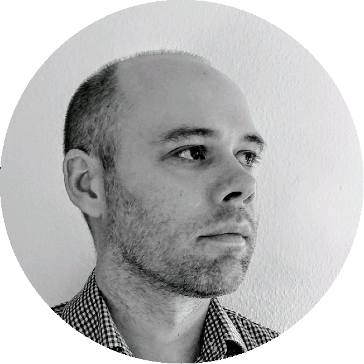

A Case-Study Driven Motivation of Analysis Results Data
19th of October @ R in Pharma 2023
Thank you for your interest in Analysis Results Data.
The workshop recording will be available soon on Youtube. In the meanwhile the presentation slides can be can be downloaded here and you can find the workshop materials in this GitHub repository.
We would also love to hear your feedback on the workshop!
Description
The development and approval of new treatments generates large volumes of results, such as summaries of efficacy and safety from supporting clinical trials through the development phases. However, these results are often shared in formats that are suitable for presentation such as PDF, PowerPoint, or HTML documents with text, tables, and figures, but not machine-readable or amenable to further analysis. Although there is an agreement on which information should be shared as part of a data package, there is no standard way to share and reuse analysis results. A solution is to shift the focus from the application of the results (e.g., tables and figures) to a data model that captures the results.
In this workshop, you will learn about the Analysis Results Data Model (ARDM), a framework for storing and managing the outputs of data analyses. You will learn how the ARDM can help you overcome common challenges in clinical development, such as data reusability and reproducibility. Through case-studies, you will experience using the ARDM in real-world problems and scenarios.
Facilitators
Joana Marques Barros is a Clinical Data Scientist at Idorsia Pharmaceuticals. In 2020, she earned her PhD in computer science, and soon after that, she began working in the pharmaceutical sector. Joana was part of the AI4Life 2021 program at Novartis, where she worked on a project that reframed the target of clinical analyses to make them more transparent, traceable, and interoperable. She keeps developing her knowledge and expertise in clinical development while continuing to show a keen interest in data management.
Lukas A. Widmer is an Associate Director Statistical Consultant in the Advanced Methodology and Data Science group at Novartis. He provides advice and is engaged in developing and implementing innovative statistical methods for clinical projects, develops trainings for statisticians and data scientists, and collaborates with external research groups. Lukas has diverse research interests, including safety modelling in dose escalation and Bayesian statistics, re-use of data through analysis results data modeling, genetic engineering, high performance computing as well as statistical software engineering. Before joining Novartis, he studied Computer Science as well as Computational Biology and Bioinformatics at ETH Zürich in Switzerland and UC Santa Barbara in the US. He also holds a Doctor of Science degree from the Department of Biosystems, Science and Engineering of ETH Zürich.

Mark Baillie is a member of the Advanced Methodology and Data Science group at Novartis. He focuses on methodology to support drug development, working on a variety of internal and external initiatives to improve the reporting of clinical trials. These include effective visual communication, initial data analysis, DMC reporting, analysis results standards, and data challenges. Mark is a member of the Stratos initiative and the PSI visualisation special interest group.